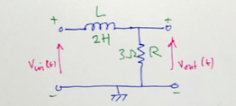

Homework 4
The Impulse Response and Convolution
The questions for Homework 4 are based on the examples given in Section 6.8 of {% cite karris %}.
- Confirm the result of Example 5 from the notes using the convolution integral
- Compute the impulse response $h(t) = i_s(t)$ (where $i_s(t) = \delta(t)$) in terms of $R$ and $L$ for the circuit shown in Fig. Q2 below. Use this result to compute the voltage $v_L(t)$ across the inductor.

Fig. Q2: An RL Circuit
Redo the graphical convolution Example 2 from the notes by forming $h(t - \tau)$ instead of $u(t - \tau)$. That is, use the convolution integral $$\int_{-\infty}^{\infty}\,u(\tau)h(t-\tau)\,d\tau.$$ Confirm the result in MATLAB.
Redo the graphical convolution Example 3 from the notes by forming $h(t-\tau)$ instead of $u(t-\tau)$. Confirm the result in MATLAB.
Derive the transfer function $$H(s) = \frac{V_L(s)}{I_s(s)}$$ for the circuit of Fig. Q2.
Use this result to
a. Confirm the impulse response of this circuit $V_L(t)$.
b. Compute the step response $$V_L(t) = \mathcal L^{-1}\left\{ H(s) U_0(s)\right\}.$$
c. Validate this result in MATLAB.
For the network show in Fig. Q6 compute:
a. The transfer function $$H(s) = \frac{V_{\mathrm{out}}(s)}{V_{\mathrm{in}}(s)};$$
b. The response of this circuit to the input $v_{\mathrm{in}}(t) = u_0(t) - u_0(t - 1).$
c. Validate this result in MATLAB.

Fig. Q6: An LR Network
For the network shown in Fig. Q7 compute:
a. The transfer function $$H(s) = \frac{V_{\mathrm{out}}(s)}{V_{\mathrm{in}}(s)};$$
b. Determine the step response of the network.
c. State the time constant of the network.
d. Validate this result in MATLAB.

Fig. Q7: An RC Network